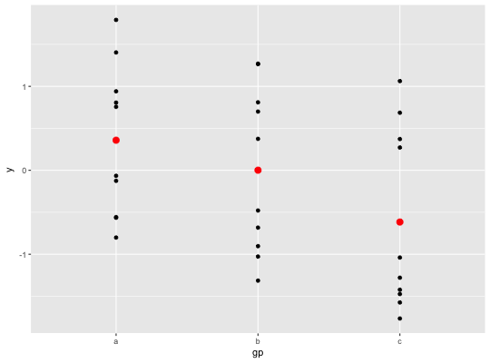
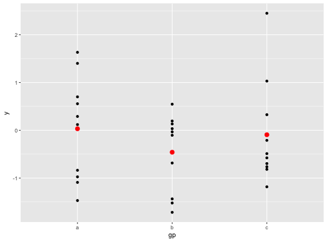
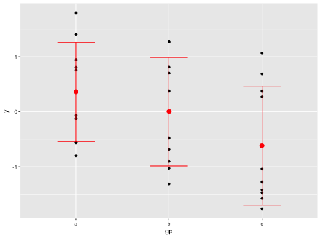

ggplot() initializes a ggplot object. It can be used to
declare the input data frame for a graphic and to specify the
set of plot aesthetics intended to be common throughout all
subsequent layers unless specifically overridden.
ggplot(data = NULL, mapping = aes(), ..., environment = parent.frame())
| data | Default dataset to use for plot. If not already a data.frame,
will be converted to one by |
|---|---|
| mapping | Default list of aesthetic mappings to use for plot. If not specified, must be supplied in each layer added to the plot. |
| ... | Other arguments passed on to methods. Not currently used. |
| environment | If a variable defined in the aesthetic mapping is not
found in the data, ggplot will look for it in this environment. It defaults
to using the environment in which |
ggplot() is used to construct the initial plot object,
and is almost always followed by + to add component to the
plot. There are three common ways to invoke ggplot:
ggplot(df, aes(x, y, <other aesthetics>))
ggplot(df)
ggplot()
The first method is recommended if all layers use the same
data and the same set of aesthetics, although this method
can also be used to add a layer using data from another
data frame. See the first example below. The second
method specifies the default data frame to use for the plot,
but no aesthetics are defined up front. This is useful when
one data frame is used predominantly as layers are added,
but the aesthetics may vary from one layer to another. The
third method initializes a skeleton ggplot object which
is fleshed out as layers are added. This method is useful when
multiple data frames are used to produce different layers, as
is often the case in complex graphics.
# Generate some sample data, then compute mean and standard deviation # in each group df <- data.frame( gp = factor(rep(letters[1:3], each = 10)), y = rnorm(30) ) ds <- plyr::ddply(df, "gp", plyr::summarise, mean = mean(y), sd = sd(y)) # The summary data frame ds is used to plot larger red points on top # of the raw data. Note that we don't need to supply `data` or `mapping` # in each layer because the defaults from ggplot() are used. ggplot(df, aes(gp, y)) + geom_point() + geom_point(data = ds, aes(y = mean), colour = 'red', size = 3)# Same plot as above, declaring only the data frame in ggplot(). # Note how the x and y aesthetics must now be declared in # each geom_point() layer. ggplot(df) + geom_point(aes(gp, y)) + geom_point(data = ds, aes(gp, mean), colour = 'red', size = 3)# Alternatively we can fully specify the plot in each layer. This # is not useful here, but can be more clear when working with complex # mult-dataset graphics ggplot() + geom_point(data = df, aes(gp, y)) + geom_point(data = ds, aes(gp, mean), colour = 'red', size = 3) + geom_errorbar( data = ds, aes(gp, mean, ymin = mean - sd, ymax = mean + sd), colour = 'red', width = 0.4 )#> Warning: Ignoring unknown aesthetics: y